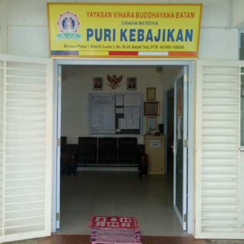
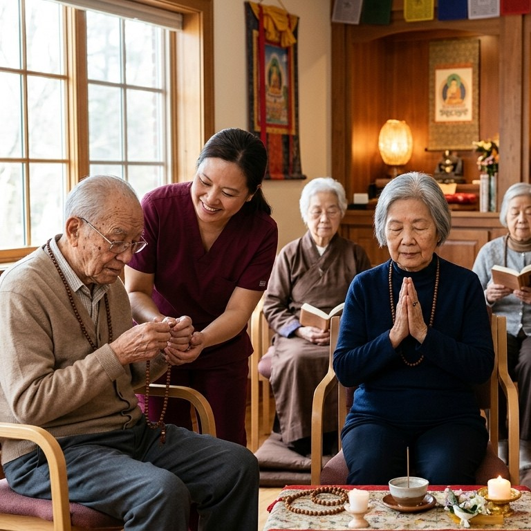
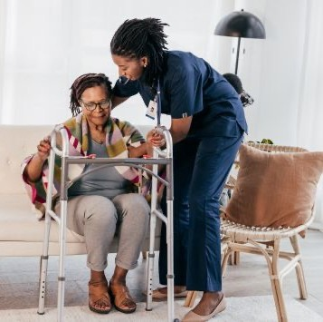

Graha Werdha “Puri Kebajikan” merupakan lembaga kesejahteraan sosial lanjut usia yang berada di bawah naungan Yayasan Vihara Buddhayana Batam. Tempat ini didirikan sebagai bentuk kepedulian terhadap para lansia agar dapat menjalani usia senja dengan nyaman, sehat, dan penuh kasih sayang.

Pendampingan Spiritual
Memberikan bimbingan dan pelayanan rohani agar para lansia dapat menjalani usia senja dengan damai, tenang, dan penuh kebahagiaan.

Lingkungan Sehat & Nyaman
Menjaga kesehatan dan kenyamanan lansia melalui pola hidup sehat, perhatian rutin, serta lingkungan yang aman dan bersih.
Interaksi & Kebersamaan
Memberikan kesempatan bagi lansia untuk berinteraksi, bersosialisasi, dan merasakan kasih sayang dalam kehidupan bersama.
Menyediakan tempat tidur yang nyaman, bersih, dan aman bagi para lansia agar dapat beristirahat dengan tenang serta menjalani aktivitas sehari-hari dengan nyaman.
Tersedia fasilitas mandi, cuci, dan kakus (MCK) yang bersih dan terawat untuk mendukung kenyamanan serta kebersihan para lansia setiap hari.
Menyediakan kebutuhan makan dan minum harian dengan memperhatikan kebersihan, kesehatan, serta pola makan yang baik bagi para lansia.
Kegiatan senam rutin dilakukan untuk membantu menjaga kesehatan tubuh, meningkatkan kebugaran, serta memberikan semangat dan kebahagiaan bagi para lansia.
Fasilitas hiburan karaoke disediakan sebagai sarana rekreasi dan kebersamaan agar para lansia dapat menikmati waktu santai dengan suasana yang menyenangkan.
Tersedia dapur untuk mendukung penyediaan makanan dan kebutuhan harian lansia dengan memperhatikan kebersihan dan kualitas penyajian makanan.
Alamat
Windsor Phase 1 Blok III Lt.1 No.28, 29, 30 Batam - Kepri (0778-428309)
Telpon